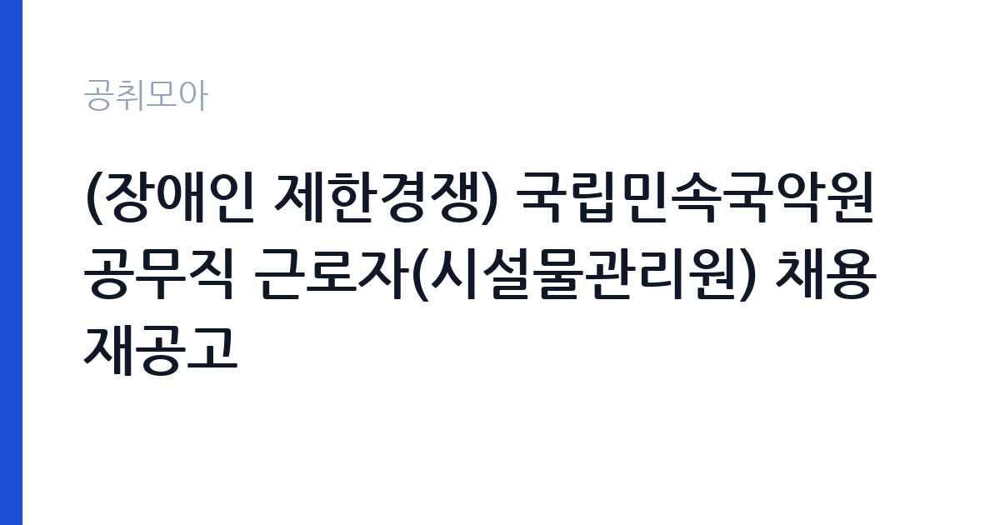

[국가기관] (장애인 제한경쟁) 국립민속국악원 공무직 근로자(시설물관리원) 채용 재공고
문화체육관광부 국립국악원 민속국악원 · 전북 · 마감 2026-09-29 (D-8) · 출처 나라일터

한눈에 보는 모집 조건
| 기관 | 문화체육관광부 국립국악원 민속국악원 |
|---|---|
| 공고명 | (장애인 제한경쟁) 국립민속국악원 공무직 근로자(시설물관리원) 채용 재공고 |
| 고용형태 | 공무직 |
| 근무지 | 전북 |
| 게시일 | 2026-09-22 |
| 마감일 | 2026-09-29 (D-8) |
지원자격, 이렇게 읽으세요
- 공무직(시설물관리원) 1명
- 접수 ~2026-09-29 마감
- 세부 조건은 원문 공고문 확인
응시의 첫 관문은 장애인 등록 여부다. 장애인고용촉진법에 따른 등록 장애인이어야 하며, 증빙 서류를 제출해야 한다. 직무가 시설물관리원(전기)이므로 전기 관련 자격증이나 시설관리 경력이 있으면 서류전형에서 유리하다. 재공고는 1차에서 적격자를 찾지 못한 경우라 요건이 조정됐을 수 있으니, 첨부된 채용 재공고문 전문을 내려받아 자격 항목을 한 줄씩 대조해야 한다.
이 공고의 포인트
이 공고의 가장 큰 매력은 공무직이라는 고용형태다. 공무직은 기간의 정함이 없는 무기계약 형태로, 계약직과 달리 계약 만료로 인한 고용 불안을 피할 수 있다. 국립민속국악원은 국립국악원 소속의 남원 소재 기관으로, 판소리 중심의 전통공연예술을 담당한다. 공연장 전기설비를 직접 관리하는 손기술직이라 정년까지 기술을 쌓을 수 있는 자리다.
전형은 어떻게 진행되나
전형은 1차 서류전형과 2차 면접전형으로 진행된다. 서류에서는 장애인 여부와 전기 직무 적합성을 보고, 면접에서는 시설관리 실무 지식과 근무 의지를 평가한다. 접수 마감이 9월 29일 오후 6시로 촉박하므로, 응시원서와 자기소개서, 장애인 증명서와 자격증 사본을 미리 챙겨야 한다. 면접은 10월 초에 실시되는 흐름이 일반적이며, 일정은 공고문과 개별 통보로 확인해야 한다.
원문에서 확인한 전형 방식
국립민속국악원 공고 제2026-28호 ○ 채용분야: (장애인 제한경쟁) 공무직 근로자- 시설물관리원(전기) 1명 ○ 접수기간: 2026. 9. 22.(화) ~ 2026. 9. 29.(화) 18:00까지 ○ 선발방법: 서류전형(1차), 면접전형(2차) ○ 근무예정지: 국립민속국악원(전북특별자치도 남원시 양림길 54) ○ 담당부서(연락처): 국립민속국악원 행정지원과 채용 담당자(063-620-2308) * 자세한 사항은 첨부파일 채용 재공고문을 확인하시기 바랍니다.
이런 분께 추천해요
- 전기기능사·전기산업기사 등 전기 자격증을 보유한 등록 장애인
- 남원이나 전주 등 전북권에 거주하며 청사 시설관리 경력을 가진 사람
- 공연장·문화시설의 전기설비 관리에 관심 있고 장기근무를 희망하는 사람
지원 전 체크리스트
- 장애인 등록 증빙 서류가 유효한지, 공고 기준일에 부합하는지 확인한다
- 전기 관련 자격증 사본과 시설관리 경력증명서를 준비한다
- 근무 예정지가 전북 남원시임을 확인하고 출퇴근·거주 계획을 세운다
- 접수 마감(9월 29일 18시)과 접수 방법(방문·우편·이메일)을 공고문에서 확인한다
모집 일정과 제출 타이밍
접수는 2026년 9월 22일부터 9월 29일 오후 6시까지다. 이후 서류전형 합격자를 대상으로 10월 초에 면접전형이 실시되고, 10월 중 임용되는 흐름이 일반적이다. 합격 후 즉시 출근이 가능한 사람을 선호하는 경우가 많으므로, 재직 중이라면 인수인계 일정을 미리 계산해야 한다. 정확한 전형 일정은 첨부 공고문과 행정지원과(063-620-2308) 안내를 확인해야 한다.
직무 이해하기: 국가기관
시설물관리원(전기)의 일과는 청사 전기설비 점검으로 시작된다. 공연장의 무대조명과 음향 전원, 냉난방 설비와 수배전반을 순찰하고 이상 징후를 기록한다. 공연이 있는 날은 리허설 전 전원 계통을 확인하고, 공연 중 정전 같은 돌발 상황에 대비한다. 노후 배선 교체와 조명기구 보수 같은 경미한 수리는 직접 처리하고, 대규모 공사는 업체 발주와 감독을 맡는다. 전기안전관리자 선임 대상 설비라면 관련 법규 준수도 업무에 포함된다.
자기소개서 작성 팁
자기소개서는 전기 실무 경험을 중심으로 써야 한다. 어떤 설비를 다뤄봤는지, 정전이나 누전 같은 문제를 어떻게 해결했는지를 구체적 장면으로 제시하는 것이 좋다. 안전의식을 강조하는 문장을 넣되, 실제 경험과 연결해야 설득력이 있다. 국립민속국악원이라는 기관 특성을 언급하며 전통공연예술 공간의 시설을 지키겠다는 각오를 덧붙이면 진정성이 전달된다.
면접 준비 포인트
면접에서는 전기 실무 질문이 나온다. 수배전반 점검 항목, 누전차단기 동작 원리, 정전 시 대응 순서 같은 기본기를 묻는다. 공연장 특성을 반영해 공연 중 정전 발생 시 어떻게 조치할 것인지 묻는 상황 질문도 예상해야 한다. 장애인 제한경쟁 전형이므로 직무 수행에 필요한 편의 사항은 당당하게 말하고, 장기근무 의지를 분명히 밝히는 것이 좋다.
급여·근무조건 읽는 법
정확한 보수액은 원문 공고문의 보수 항목에서 확인해야 한다. 공무직 보수는 통상 최저임금에 연동해 예산 범위 내에서 결정되고, 식비 등 수당은 관련 규정에 따라 별도로 지급되는 구조가 일반적이다(법원 공무직 채용 공고 사례). 4대보험 가입과 명절수당, 시간외수당의 적용 여부는 기관 규정에 따르므로 원문에서 확인하기 바란다. 경쟁률과 합격선은 공개되지 않으므로 원문에서 확인해야 한다.
자주 묻는 질문
- 공무직의 정년이 있나요?
공무직은 기간의 정함이 없는 근로자로, 정년까지 근무하는 구조가 일반적이다. 정확한 정년과 보수 체계는 국립민속국악원 규정과 원문 공고문에서 확인해야 한다. - 장애인 제한경쟁이란 무엇인가요?
등록 장애인 중에서만 지원자를 받는 전형이다. 비장애인은 지원할 수 없으며, 장애인 증빙 서류는 필수 제출 서류다. - 남원 근무가 확정인가요?
공고문에 근무예정지가 국립민속국악원(전북 남원시 양림길 54)으로 명시되어 있다. 타 지역 순환근무 가능성은 원문과 기관에 확인해야 한다.
함께 보면 좋은 공고
[국가기관] [외교부 공고 제2026-168호] 외교부 전문임기제 나급(통역 전문인력) 경력경쟁채용시험 특수외국어 시험 일정 공고 — 마감 2026-09-21[국가기관] 2026년 제주대학교 국립대학육성사업 및 IR센터 연구원 채용 공고 — 마감 2026-09-29[국가기관] 2026년 제1회 보령우체국 별정우체국 기간제직원(집배) 채용공고 — 마감 2026-09-30출처: 나라일터 공개정보를 바탕으로 공취모아가 정리한 안내글입니다. 모집 조건·일정은 변경될 수 있으니 지원 전 반드시 원문 공고문을 확인하세요. 본 글은 정보 제공용이며 합격을 보장하지 않습니다.